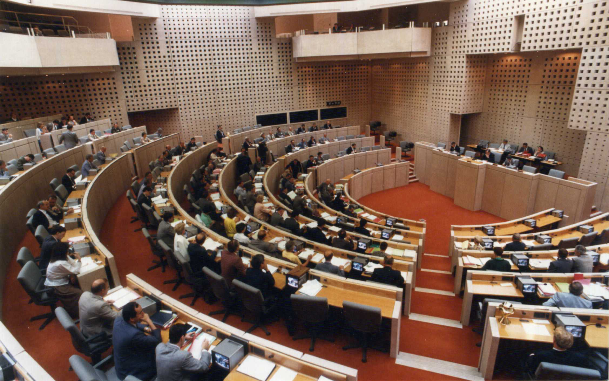

Au cœur des archives sonores des Pays de la Loire
Rembobinez le temps notre patrimoine est aussi le vôtre.
Activez le son pour une meilleur expérience
Le conseil régional
a vu le jour dès 1974, et est devenu une collectivité territoriale après la décentralisation des pouvoirs en 1982. Les archives sonores des Pays de la Loire rassemblent les enregistrements des réunions des conseils régionaux entre 1974 et 1994.
Photo de l’hémicycle - Archives régionales des Pays de la Loire
Les archives sonores se découpent en trois périodes : l’époque où la région n’était pas encore considérée comme une collectivité territoriale (1974-1986), suivi par le premier mandat après la prise en fonction effective de la loi sur la décentralisation de 1986 à 1992, puis le second mandat en 1992 après l’élection d’une nouvelle assemblée.

Qui êtes-vous, Monsieur le Président ?
De 1974 à 1994, le conseil régional est représenté par deux présidents.
Survolez les bobines pour en connaître davantage.

Vincent Ansquer
Président du conseil de janvier à octobre 1974
Son parti politique : Union des démocrates pour la République (UDR)
Durée : 7 min. FRAR52_396PR11_1_BM_2 Date : 30/01/1974
Olivier Guichard
Président du conseil d’octobre 1974 à mars 1996
Son parti politique : Rassemblement pour la république (RPR)
Durée : 2 min. Réf. : FRAR52_396PR15_1_BM_1 Date : 21/03/1986
Vincent Ansquer
Olivier Guichard
Zoom sur les archives sonores
Pendant 20 ans, le conseil régional enregistre un total de audios, et tient réunions.
Cliquez sur une cassette pour écouter.
Quels sont les types de réunion ?
Les questions budgétaires occupent la majeure partie des ordres du jour.
Sélectionnez les périodes qui vous intéressent en cliquant sur les boutons du micro.

Quels thèmes sont évoqués ?
De l'agriculture, à l'éducation en passant par l'environnement, de nombreux thèmes sont abordés lors des réuinons du conseil régional.
Cliquez sur les bobines et survolez les bandes pour découvrir combien de réunions ont abordé ces thèmes.
La séance est levée
Vous venez de découvrir les archives sonores, sachez que vous pourrez bientôt, vous aussi, contribuer à l’ajout des données non-renseignées. Les archives de la région Pays de la Loire sont aussi les vôtres.
AGR, l’école de l’image
Design graphique
Polytech'
Intégration
Sciences Com
Rédaction des contenus

Ambre Lemaître Astrid Ogereau-Legay Pauline Rouziou
Julien Guitton Ibrahim Souleymane
Gwendoline Barbu Delphine Lossec
Partenaires: